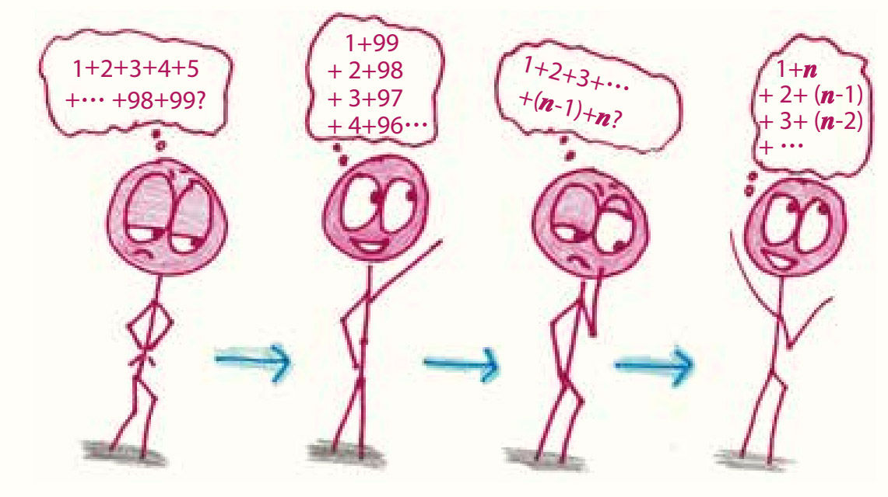

平心而论，数学家每天要做的事情并不太多。他们有的一边喝咖啡，一边眉头紧锁，一边看着黑板，有的一边喝茶，一边眉头紧锁，一边看着正在考试的学生，还有的一边喝啤酒，一边眉头紧锁，一边看着去年写出来的证明，却怎么也看不懂了。

这就是一种常常在喝东西，常常愁眉苦脸，并且以苦思冥想为主的生活。
数学研究没有具体的对象。它不像化学，可以滴定物质；不像物理，可以加速粒子；也不像金融，可以在市场上搅动风云。相反，数学家所谓的行动都是思想上的行动。在计算时，我们把一个抽象的概念变成另一个抽象的概念；在证明时，我们用逻辑将一个个相关的想法关联起来；在编写算法或计算机程序时，我们设计电子大脑，用来处理人类因为太忙或者脑子太慢而顾不上的问题。
在数学的陪伴下，我每年都会学到新的思维方式，让头盖骨里头那个高效全能的工具开启新的功能。我学会了利用规则的漏洞掌握游戏主动权，用混乱的希腊符号记录思想，把犯过的错误当成良师，从中吸取教训，以及在思绪混乱时调整自己，学会变通。
以上种种都表明，数学就是一种思维。
你可能会问，如果数学只是停留在思想中，那么它真的能将真实的事物串联起来吗？宇宙飞船、智能手机和烦人的“精准投放式广告”又是怎么从数学中神奇地浮现出来的呢？耐心一点儿，这些我们都会讲到的，但不是现在。现在，我们得从数学开始的地方说起，也就是从一个游戏说起。